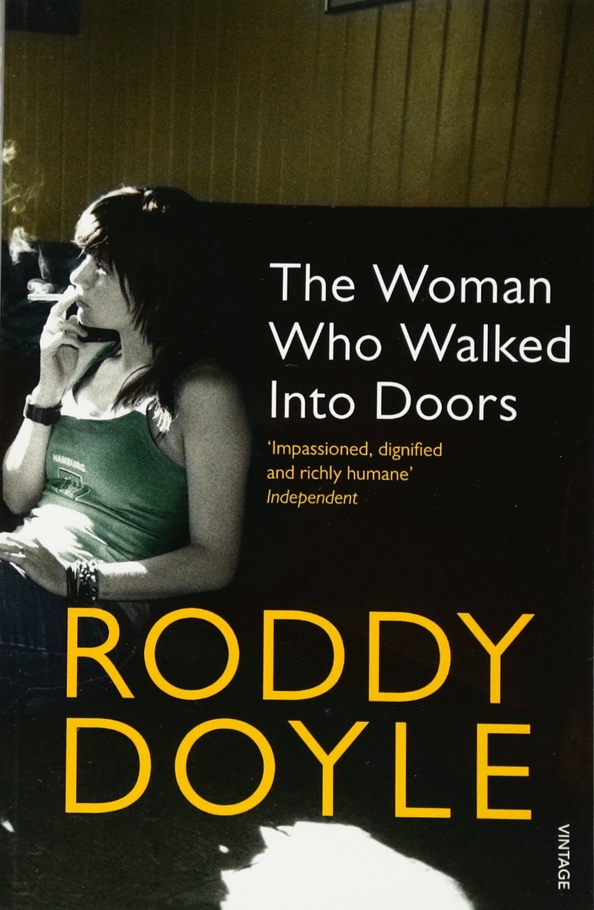

Last night I finished Roddy Doyle’s The Woman Who Walked Into Doors and I figured I’d write a quick review on it. It’s a book on the life of an Irish working-class woman named Paula who is struggling with an abusive husband and attempting to keep her family from the brink that her husband creates.
The details in this book are what make it particularly excellent writing. The lead character recalls incredibly specific details that bring her tragic story to life. There’s a few mildly absurd elements to the book, but they’re grounded in the unrelenting reality the lead character describes. A chipped plate, the heat from a bag of chips on a cold day, an attempt to describe the burning sensation of being repeatedly kicked in the back. These elements are what kept me turning the pages.
The build-up towards the end is also pretty incredible, the character becomes whole in the utter despair she describes and the fortitude she shows feels staggering. She’s both incredibly vulnerable yet seems to have no end to her strength.
One of the downsides of the book is that while you will eventually come to fall for the lead character, her development takes a little too long. For most of the book you’ll feel constantly distant with Paula until she eventually shares the true reality and despair of her situation. It’s not too much of a downside, it all pays off eventually and this downside may simply mean the book needs a re-read.
I’d recommend this one to someone that can handle a harsh unrelenting book. You’ll be rewarded, but it comes at a price.